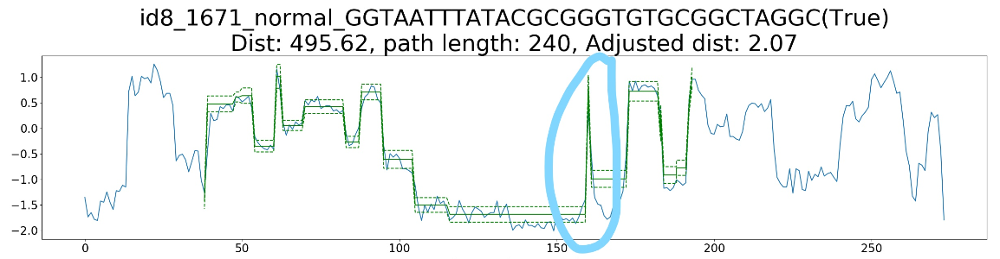

Last updated: 2019-10-07
Checks: 6 1
Knit directory: workflowr/
This reproducible R Markdown analysis was created with workflowr (version 1.4.0). The Checks tab describes the reproducibility checks that were applied when the results were created. The Past versions tab lists the development history.
The R Markdown file has unstaged changes. To know which version of the R Markdown file created these results, you’ll want to first commit it to the Git repo. If you’re still working on the analysis, you can ignore this warning. When you’re finished, you can run wflow_publish to commit the R Markdown file and build the HTML.
Great job! The global environment was empty. Objects defined in the global environment can affect the analysis in your R Markdown file in unknown ways. For reproduciblity it’s best to always run the code in an empty environment.
The command set.seed(20190306) was run prior to running the code in the R Markdown file. Setting a seed ensures that any results that rely on randomness, e.g. subsampling or permutations, are reproducible.
Great job! Recording the operating system, R version, and package versions is critical for reproducibility.
Nice! There were no cached chunks for this analysis, so you can be confident that you successfully produced the results during this run.
Great job! Using relative paths to the files within your workflowr project makes it easier to run your code on other machines.
Great! You are using Git for version control. Tracking code development and connecting the code version to the results is critical for reproducibility. The version displayed above was the version of the Git repository at the time these results were generated.
Note that you need to be careful to ensure that all relevant files for the analysis have been committed to Git prior to generating the results (you can use wflow_publish or wflow_git_commit). workflowr only checks the R Markdown file, but you know if there are other scripts or data files that it depends on. Below is the status of the Git repository when the results were generated:
Untracked files:
Untracked: docs/img/Discussion/Oversqueezed.PNG
Unstaged changes:
Modified: analysis/Problem_and_Discussion.Rmd
Modified: docs/img/Discussion/Inkedid8_1671_normal_1(True)_LI.jpg
Note that any generated files, e.g. HTML, png, CSS, etc., are not included in this status report because it is ok for generated content to have uncommitted changes.
These are the previous versions of the R Markdown and HTML files. If you’ve configured a remote Git repository (see ?wflow_git_remote), click on the hyperlinks in the table below to view them.
| File | Version | Author | Date | Message |
|---|---|---|---|---|
| Rmd | 5c70cee | youyupei | 2019-10-07 | update |
| html | 5c70cee | youyupei | 2019-10-07 | update |
| Rmd | 3ff2999 | youyupei | 2019-10-07 | update |
| html | 3ff2999 | youyupei | 2019-10-07 | update |
In Tombo resquiggle, the accuracy of the squiggle to sequence alignment largely depends on the correctness of the provided reference sequence. However, for the queried reads, we do not know what is the proper input sequence to extract the signal that is from the exon junction.
possible solutions: It is okay if we can not get an accuracy base-to-base assingment near the exon boundary. We can input base-called seq or annotated reference and extract signal from a wider window as long as we are sure the exon boundary is inside the window. Then we can search the best match inside.
After inspecting into some bad DTW results, I found out the some simulated signals are not at the some scale as the observed signal. I updated the normalisation methods:
Previous: normalisation over each point use medmad, the normalistion parameters were calculated from and for trimmed junction signal and scrappy simulated signal separately. Updated:
For junction signal: The normalisation parameters are from tombo resquiggle (details see tombo resquiggle algorithm). The scale parameter from tombo will then be multiplied by 1.4826 to be consistent with scrappie output.
For simulated signal No action is needed. Scrappie uses similar normalisation method as tombo does, the only difference is that the scale parameter is \(k*MAD\) where k is a scalor factor. Scrappie choose 1.4826 as k, which comes from normal assumption(details see https://en.wikipedia.org/wiki/Median_absolute_deviation).
After inspecting into unexpected DTW results, I found that a lot of the bad results were coursed by the current spike.
In these spikes, some of them are clear outliers (solved):
However, some of them are not: 
For the large spike, I applied a outlier filter. Data points with \(|X_i| > 3*k*MAD\) will be identified as outlier and removed from the signal (no imputation applied currently).
For the small spike: * Idea: Use t-distribution instead of normal distribution. The flat tail will reduce the sensitivity of outliers. I have tested t-distribution with degree of freedom = 1, see test2 * To be discussed Idea: use different degree of freedom for different data points.
I have also observed some cases that the scrappie model is over squeezed after alignment:
Possible solution: 1. Use banded accumulate matrix in DTW 2. Give penalty to over squeeze.
There are some ideas about how to implement probabilistic output (23/9/2019)
Use likelihood ratio as the ratio of probabilitis of different candidates.
Use EM algorithm to estimate \(P(z_i = k)\), where \(z_i\) is the latent singal to candidate assinment.\(k\in \{1..K\}\), where \(K\) is the number of candidates. Then \(P(z_i|X, \boldsymbol{\hat\pi})\).
Main Problem: The likelihood is not comparible when data are different. Since we are applying local alignment in DTW, we are actually calculating the likelihood using different sets of data points. This factor make the comparison of likelihood non-sense. Another thing: in DTW, it is possible that a single point in observed data is assigned multiple times. It doesn’t make sense in likelihood ratio neither.
Is there currently any method can be use for splicing site identification?
FLAIR uses short reads and annotation for splice junction correction.
Do we compare our method to the number of support from mapping results?
sessionInfo()R version 3.4.4 (2018-03-15)
Platform: x86_64-pc-linux-gnu (64-bit)
Running under: Ubuntu 18.04.3 LTS
Matrix products: default
BLAS: /usr/lib/x86_64-linux-gnu/blas/libblas.so.3.7.1
LAPACK: /usr/lib/x86_64-linux-gnu/lapack/liblapack.so.3.7.1
locale:
[1] LC_CTYPE=en_AU.UTF-8 LC_NUMERIC=C
[3] LC_TIME=en_AU.UTF-8 LC_COLLATE=en_AU.UTF-8
[5] LC_MONETARY=en_AU.UTF-8 LC_MESSAGES=en_AU.UTF-8
[7] LC_PAPER=en_AU.UTF-8 LC_NAME=C
[9] LC_ADDRESS=C LC_TELEPHONE=C
[11] LC_MEASUREMENT=en_AU.UTF-8 LC_IDENTIFICATION=C
attached base packages:
[1] stats graphics grDevices utils datasets methods base
loaded via a namespace (and not attached):
[1] workflowr_1.4.0 Rcpp_1.0.1 digest_0.6.19 rprojroot_1.3-2
[5] backports_1.1.4 git2r_0.25.2 magrittr_1.5 evaluate_0.14
[9] stringi_1.4.3 fs_1.3.1 whisker_0.3-2 rmarkdown_1.13
[13] tools_3.4.4 stringr_1.4.0 glue_1.3.1 xfun_0.7
[17] yaml_2.2.0 compiler_3.4.4 htmltools_0.3.6 knitr_1.23